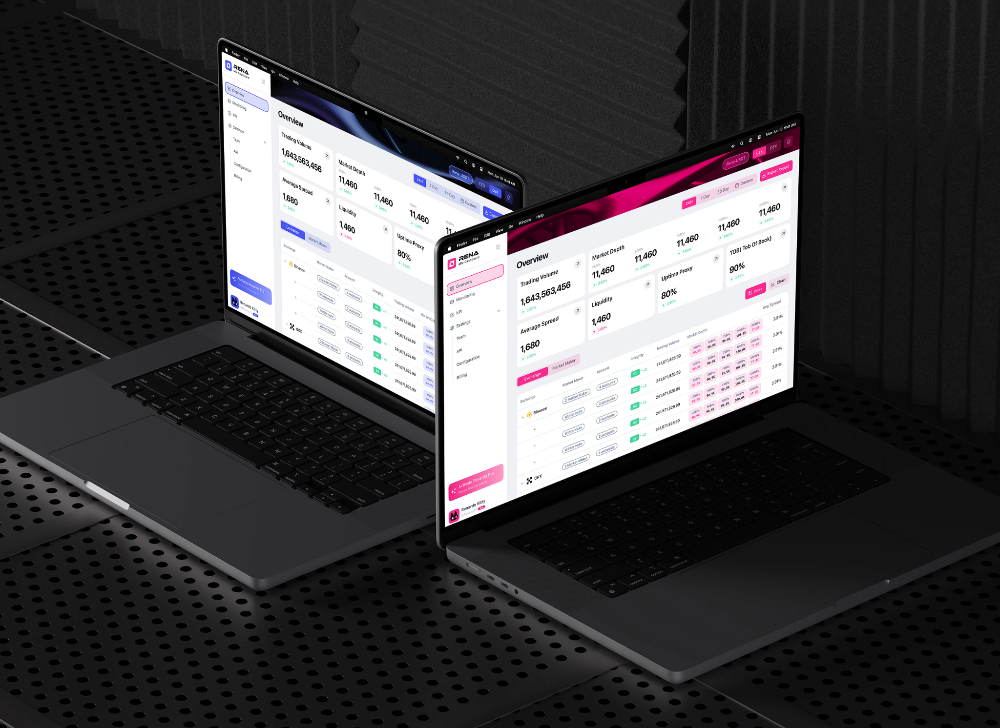

“So, What brings you here, to the ArtCenter?”
I would say I am a pragmatic person. I prefer to engage in design work that is highly grounded and practical. I was specifically looking for a school that could help me bring my projects to fruition—and, from what I had learned, ArtCenter was exactly that kind of institution. That is why I came here.
“How has your understanding of 'Interaction design' changed since you first enrolled in school?”
“Do more research,
rather than imagine.”
When I first enrolled, I thought interaction design was a very technical discipline, like a device design subject. But after actually studying it, I realized that's not the case at all. Interaction design is a very diverse and complex discipline, and it can be connected with many different fields.

“During your studies at ArtCenter, was there a project or moment that completely changed your design methods or way of thinking?”
Speaking of changing my mindset, I feel that my mindset only truly changed when I started working. Before, many things I did were superficial. But when you actually discover user pain points and do actual design, you realize that the interface we create isn't just about looking good; it has to be truly usable. When you're doing front-end development, you also have to compromise on the back-end. This isn't just about aspects like graphic design.

“When working on a project, how do you balance artistic expression with practical feasibility?”
"Interview is to testify"
I believe that throughout this process, research and interviews have a profound ability to reshape one's thinking. In the initial stages—no matter how brilliant your ideas may be—you must validate them through research to determine whether there is a genuine demand for the concept and if it aligns appropriately with the project.
“How do your projects typically begin? With user research, or with concept definition?”
I think for many people, their projects begin with their own personal interests; research, then, would be considered the second step. Following that, they often use news and current social affairs as their starting point.
“Which project do you feel best represents your style?”
I consider this to be a B2B product. It is a data monitoring tool; while its design language leans towards the utilitarian—and isn't particularly visually stunning—the user experience is absolutely excellent.
“Do you have any works of your own that you aren't entirely satisfied with?”
If that’s the case, then I am dissatisfied with all of my work. This is because, as you delve deeper into your studies, you inevitably overturn your previous understandings; at each new stage, you constantly revise your work until you are satisfied. Therefore, for me, whether I feel satisfied or dissatisfied is merely a sentiment of the moment.
“If you could say one thing to your freshman self, what would it be?”
Just be yourself—experiment with something more abstract, something you haven't done before. Focus first on cultivating your own unique style, and don't worry about practical implementation just yet.